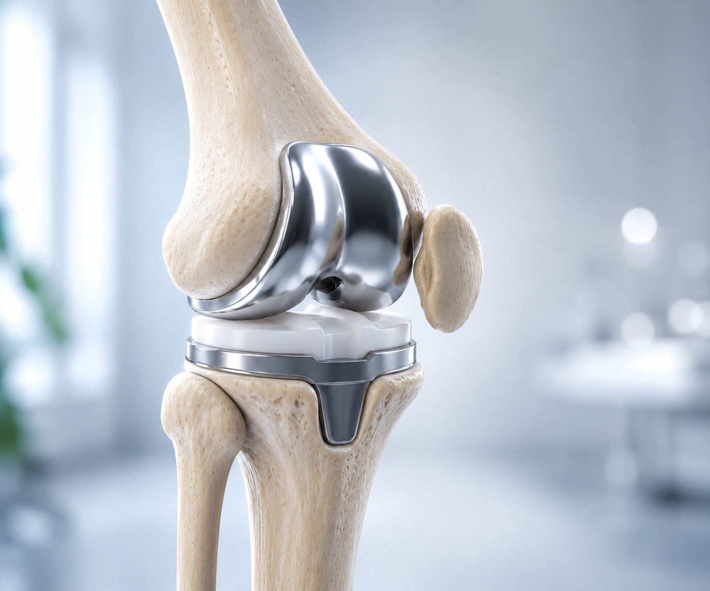
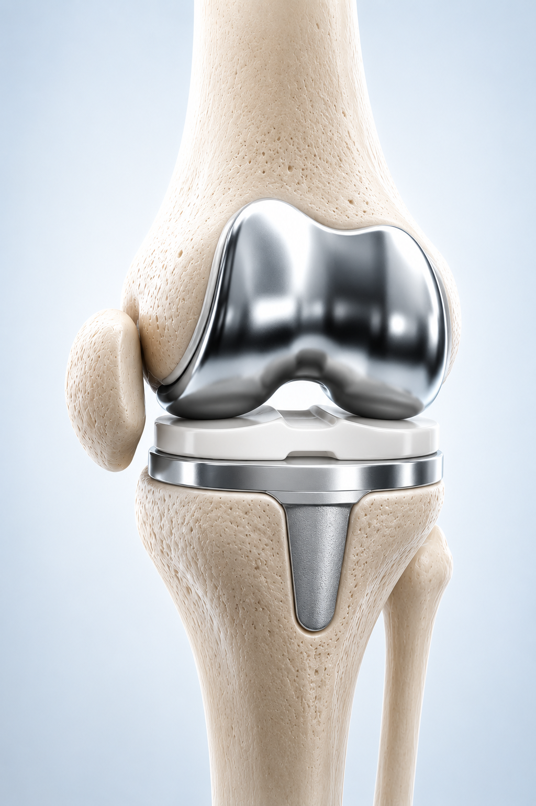
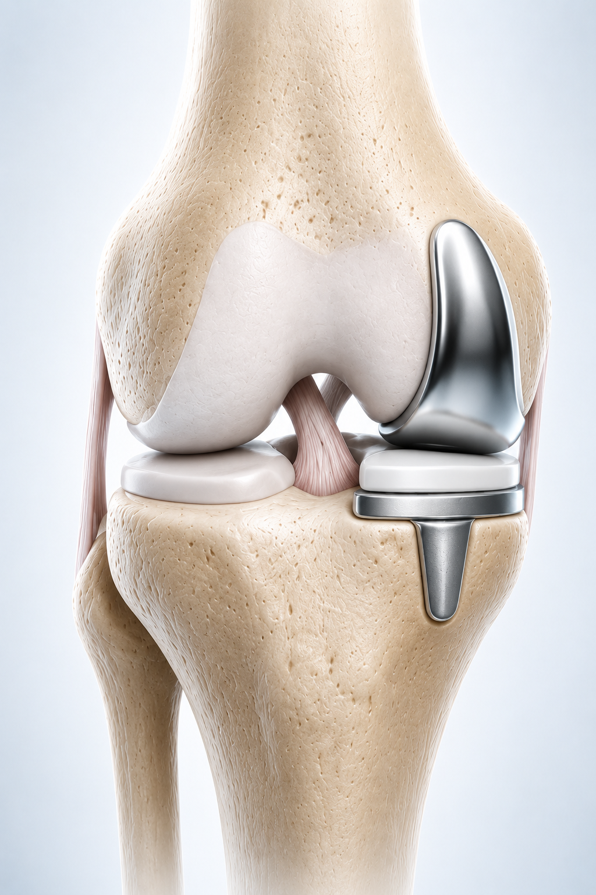

Total Knee Replacement (TKR) is a surgical procedure in which a damaged knee joint is replaced with an artificial implant to reduce pain, improve mobility and help patients walk comfortably again. It is commonly recommended for people suffering from severe arthritis, knee joint damage or chronic knee pain.
At Rashtrotthana Hospital, we provide advanced Knee Replacement Surgery in Bangalore with experienced orthopedic specialists, modern treatment facilities and personalised recovery care focused on long-term mobility and patient comfort.

Free Knee Pain Clinic · Bangalore
Are you struggling with knee pain while walking, climbing stairs or standing for long periods? Our specialised Knee Pain Clinic offers a free consultation to help you understand the cause of your pain and explore the right treatment options.
Not every knee pain requires surgery. Early consultation can help you reduce pain, improve mobility, and avoid further joint damage.
Procedures We Offer
Our orthopedic specialists assess your condition and recommend the most suitable procedure for your needs.

Recommended when the entire knee joint is severely damaged due to arthritis, injury or long-term wear and tear. The damaged joint is replaced with an artificial implant to reduce pain and improve mobility.

Performed when only one part of the knee joint is affected. This procedure helps preserve healthy bone and ligaments while providing faster recovery and improved knee function.
At Rashtrotthana Hospital, our orthopedic specialists provide advanced Knee Replacement Surgery in Bangalore with personalised treatment plans based on each patient's condition and mobility needs.
Why Choose Us
We combine advanced orthopedic technology with experienced knee replacement specialists to provide safe, precise and patient-focused care.
We help make Knee Replacement Surgery in Bangalore more accessible with smooth insurance support and transparent care.
Located in Rajarajeshwari Nagar, Bangalore — easily accessible for patients and families visiting for TKR, Partial Knee Replacement and other orthopedic treatments.
Step-by-Step Process
Your Step-by-Step Knee Replacement Journey
Our orthopedic specialists evaluate your symptoms, scans and knee condition to understand the right treatment plan for you.
Advanced Total Knee Replacement Surgery is performed using modern surgical techniques focused on precision, safety and improved mobility.
Patients are supported with pain management, early movement guidance, and personalised care for a smooth recovery experience.
Physiotherapy and rehabilitation help improve strength, flexibility and confidence in walking and daily activities after surgery.
At Rashtrotthana Hospital, our team focuses on comfortable recovery, patient safety and long-term mobility outcomes for patients undergoing Knee Replacement Surgery in Bangalore.
Patient Questions
Answers to the most common questions about ACL tears, surgery, and recovery.